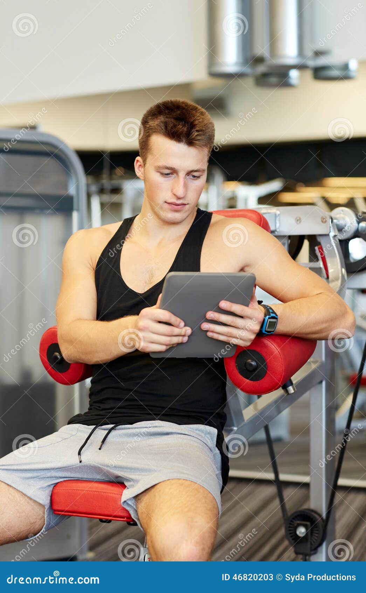
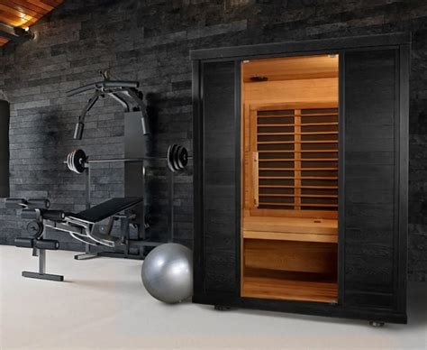
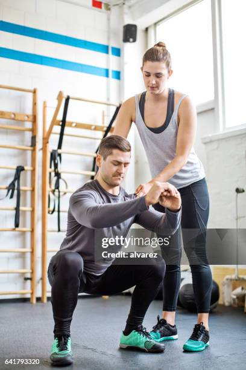

Tervetuloa Northwind Gym & Recoveryyn – Voimaa ja palautumista pohjoisella asenteella
Northwind Gym & Recovery ei ole vain kuntosali. Se on kokonaisvaltainen hyvinvoinnin keskus, jossa hyvä treeni ja tehokas palautuminen kohtaavat.
Me uskomme, että todellinen suorituskyky rakennetaan tasapainolla: huoltamalla kehoa kokonaisvaltaisesti ja suomalaisella sisulla.




Miksi valita Northwind?
Suorituskykyä ja rentoutumista saman katon alla
Olipa tavoitteesi sitten voiman kasvattaminen, kestävyyden parantaminen tai yksinkertaisesti parempi olo, me tarjoamme työkalut matkallesi. Modernit laitteet, inspiroiva ympäristö ja monipuolinen palveluvalikoimamme, että jokainen treeni vie sinua eteenpäin. Monipuolisesta palveluvalikoimasta voit valita juuri sen, mitä tarvitset, eikä sinun tarvitse maksaa turhasta.
Northwind Gym & Recovery on yhdistelmä tahdonvoimaa, kehon kokonaisvaltaista hyvinvointia ja taitoa kuunnella omaa kehoaan.
Kaikkea toimintaamme ohjaa kolme perusarvoa:
Pysyvät tulokset
Emme usko pikavoittoihin. Tavoitteenamme on, että asiakkaamme voivat vahvistaa toimintakykyään omaa arkeaan ja toimintakykyään tukevasti. Treeni rakennetaan viisaasti, kauaskantoisesti ja hyvää tekniikkaa silmällä pitäen.
Yhteisöllisyys ja aitous
Northwind Gym & Recoveryyn jokainen on tervetullut tasosta riippumatta. Yhteisömme kannustaa kurkottamaan kohti omia tavoitteita, mutta pitämään jalat maassa. Meillä voit olla oma itsesi.
Kokonaisvaltainen hyvinvointi
Jo nimestämme voi päätellä, että palautuminen on meille sydämen asia. Ymmärrämme, että palautuminen on oleellinen osa kehitystä. Siksi olemme panostaneet huippuluokan palautumistiloihin ja -palveluihin, jotka auttavat sinua palautumaan arjen kiireistä ja treenin rasituksesta.